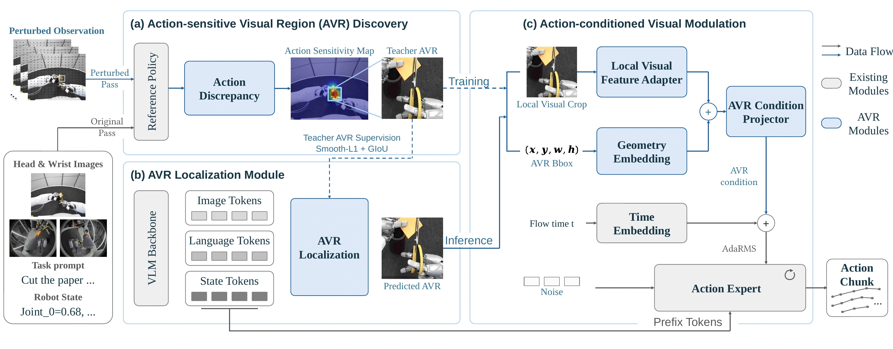

Action-sensitive Visual Region (AVR) Discovery
Action-sensitive Visual Region (AVR) Discovery feeds clean and locally blurred images into a reference policy, converting action shifts into an Action Sensitivity Map to extract the teacher AVR.
Recent progress in robotic hardware and foundation models has enabled sophisticated dexterous skills, including tool use and deformable object manipulation. However, while existing methods predominantly investigate tactile and force feedback in such contact-rich tasks, fine-grained visual perception remains largely underexplored. In this paper, we present Focus4Dex, bridging task-critical visual discovery with local action conditioning to resolve both where to focus and how to manipulate in precise dexterous manipulation. Our pipeline comprises three components: (1) Action-sensitive Visual Region (AVR) Discovery, which identifies teacher AVRs offline via localized visual perturbations; (2) an online AVR Localization Module supervised by these teacher AVRs to predict AVRs in real time without online perturbations; and (3) Action-conditioned Visual Modulation, which combines local visual features and region geometry to modulate the action expert via gated adaptive RMS normalization (AdaRMS) while preserving global scene representations. Evaluated across four real-world tasks spanning tool use and deformable object manipulation, Focus4Dex achieves a 50.5% mean success rate, outperforming the strongest baseline by 12.5 percentage points. Comprehensive ablations further verify the effectiveness of our conditioning design.
Overview of the Focus4Dex Framework.

Action-sensitive Visual Region (AVR) Discovery feeds clean and locally blurred images into a reference policy, converting action shifts into an Action Sensitivity Map to extract the teacher AVR.
AVR Localization Module processes the VLM global prefix (global views, language, and state) via an MLP head to regress online AVR predictions, supervised by the teacher AVRs from (a).
Action-conditioned Visual Modulation encodes the local visual crop via a local visual feature adapter and fuses the resulting features with a region geometry embedding through an AVR condition projector to modulate the action expert via gated suffix AdaRMS.
Main Real-World Comparison.
Evaluated across four real-world tasks spanning tool use and deformable object manipulation, Focus4Dex achieves a 50.5% mean success rate, outperforming the strongest baseline by 12.5 percentage points.
| Policy | Paper Folding | Paper Cutting | Paper Unfolding | Thread Cutting | Mean |
|---|---|---|---|---|---|
| LingBot-VA | 16% | 0% | 10% | 42% | 17.0% |
| OpenWAM | 18% | 0% | 12% | 48% | 19.5% |
| DM0.5 | 42% | 0% | 26% | 12% | 20.0% |
| π₀ | 60% | 22% | 12% | 34% | 32.0% |
| π₀.₅ | 62% | 36% | 18% | 36% | 38.0% |
| Focus4Dex (Ours) | 76% | 42% | 30% | 54% | 50.5% |
Main Real-World Comparison. Task success rates (%) over 50 trials per task and method on the 65-DoF bimanual platform. Mean denotes the unweighted average across tasks; bold marks the highest observed success rate in each column.
The robot coordinates both dexterous hands to execute two successive folds on a flat sheet of paper.
The robot stabilizes a sheet of paper with its left hand while actuating scissors with its right hand to cut along a marked straight or curved black contour and separate the designated portion.
Starting from a sheet folded in half twice, the robot coordinates both hands to separate and flatten both folds in reverse order until the sheet is restored to its unfolded state.
The robot grasps scissors with its right hand, approaches a thin thread secured to a stand, aligns the blades around the thread, and closes them to sever it.
@misc{focus4dex,
title = {{Focus4Dex: Action-Guided Visual Information Selection and Utilization for Dexterous Manipulation}},
author = {Wensi Huang and Yangkun Zhu and Tutian Tang and Wanli Xing and Xingyu Ji and Yang Li and Feng Zhao and Kaifeng Zhang and Qiaojun Yu and Weinan Zhang}
}